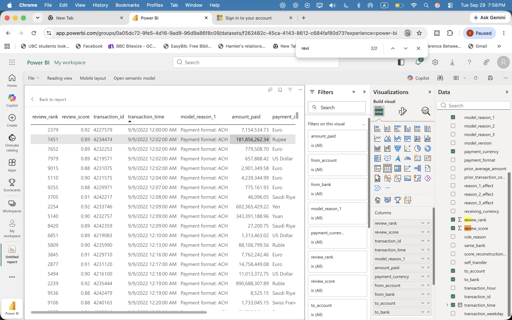
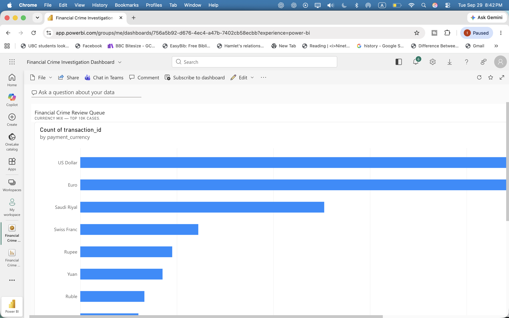

Project report · Financial analytics
Financial Crime
Analytics
Turning a long list of payments into an explainable review queue.
Technologies PostgreSQL · SQL · Python · NumPy · Power BI
Project overview
I built a transaction-ranking system using 5,078,345 simulated payments from IBM’s HI-Small dataset. The objective was to help a reviewer decide which payments to inspect first, with an explanation for each suggestion.
The project combines SQL analysis, a class-weighted logistic regression model built with NumPy, and a Power BI review report. The model ranks payments for human review; it does not confirm money laundering or make investigation decisions.
How I built it
- Understand the payments. Use SQL to examine payment amounts, formats, currencies, and account activity, then build features from the payment and its sender’s earlier history.
- Learn from earlier dates. Train the model on payments before September 8, 2022, validate on September 8, and test on September 9 onward.
- Audit the review order. Rebuild original decimal features, compare a matched rounded control and simple rules at the same review capacities, and verify metrics with scikit-learn. The earlier Power BI report remains a labeled v1 presentation artifact.
Modelling decisions
The chronological split tests the model on later payments instead of randomly mixing dates. Historical features use earlier calendar days, and laundering labels are excluded from model inputs; labels are used as training targets and evaluation answers.
Class weighting gives rare labelled payments more influence during training. Explanations show feature contributions to the model score, not causes of wrongdoing. The score is not a calibrated probability of crime.
Recomputed results
Full-source audit completed. I re-read all 5,078,345 original rows, validated decimal amounts, rebuilt earlier-day features, and retrained without changing the dates or tuning the model. At a review capacity of 1,000 payments, the full-precision model retrieves 267 labeled positives: 26.7% precision and 16.57% recall, compared with 34 for an amount/history rule and one for prior transaction frequency.
| Reviewed | Model | Amount / history | Prior frequency |
|---|---|---|---|
| 100 | 37 | 4 | 1 |
| 500 | 147 | 17 | 1 |
| 1,000 | 267 | 34 | 1 |
| 5,000 | 667 | 86 | 5 |
What the overall number hides
217 of those 267 positives come from a tiny late-period tail. September 11–18 contains only 1,108 rows, with 655 positive labels. The two high-volume test dates, September 9–10, contain 862,792 rows and 956 positives. In a separate capacity-matched diagnostic on those dates, the model finds 76 positives per 1,000 reviews, versus 26 for amount/history and one for frequency. This diagnostic describes an observed distribution change; it is not a new untouched holdout or a replacement for the full test.
All 1,000 cases in the global queue are ACH payments. Date and payment-format associations may reflect the simulator. The overall queue still includes 733 negative labels and misses 1,344 positives, so the result is not dependable detection of all suspicious activity.
Precision correction, not a performance boost
The matched two-decimal control retrieves 270/1,000, compared with 267 using correct source precision; the queues share 991 transaction IDs. Restoring decimals fixes input fidelity but did not improve ranking here. The older published 199/1,000 result is archived separately; its difference from this audit cannot be attributed to precision alone.
| Import | Average precision | Positives / 1,000 |
|---|---|---|
| Full source precision | 0.1276433 | 267 |
| Two-decimal control | 0.1288358 | 270 |
Both runs pass 3,644 independent metric assertions using scikit-learn and separate stable-ID ranking checks, including validation/test and 31 date/currency/format slices per run. The test contains 863,900 payments and 1,611 positive labels. Full-precision ROC-AUC is 0.9634822; a 0.5 cutoff produces 115,465 false positives, so it is not an established operating policy.


Figure 1. Earlier Power BI review queue · v1
This saved report uses the original model and has not been refreshed with the new audit. Current metrics and model artifacts are linked below.
Supporting evidence: original currency dashboard


Figure 2. Original v1 cases by currency
Historical presentation evidence. Counts describe the saved ranked sample, not monetary totals or confirmed crimes.
Data & limitations
The synthetic dataset spans 18 days, 15 currencies and seven payment formats; the later test contains six formats. There is no external validation, probability calibration, or real investigator feedback. The amount rule compares a payment with the sender’s earlier same-currency average, rather than treating amounts in different currencies as equivalent units. Source-ID order resolves tied capacity boundaries deterministically.
The original import rounded amounts to NUMERIC(18,2). Re-reading the source identifies 145,670 paid amounts and 147,755 received amounts affected, all in Bitcoin; 112,769 prior-average feature values change in the paired audit. The bounded-space rebuild uses exactly validated decimal inputs in DuckDB, with both modes checked against PostgreSQL on fixtures. It does not claim a full new PostgreSQL database import. The separate banking pipeline publication is unchanged.
Takeaway & next step. Correct inputs and credible baselines matter more than a single attractive metric. The audit shows what the model adds over the tested rules, while exposing how strongly its apparent performance depends on the synthetic period and payment format. A new representative test and reviewer feedback are needed before selecting further improvements or proposing real-world use.
Technical evidence: current model report · metrics, matched control & independent checks · reproduction & reviewer walkthrough · original v1 results